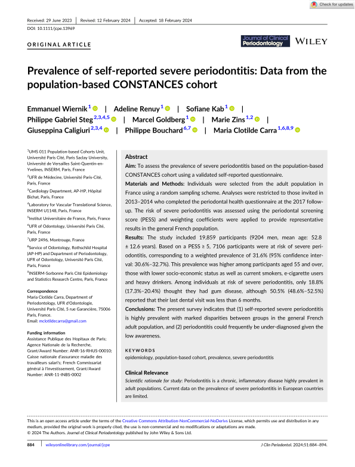
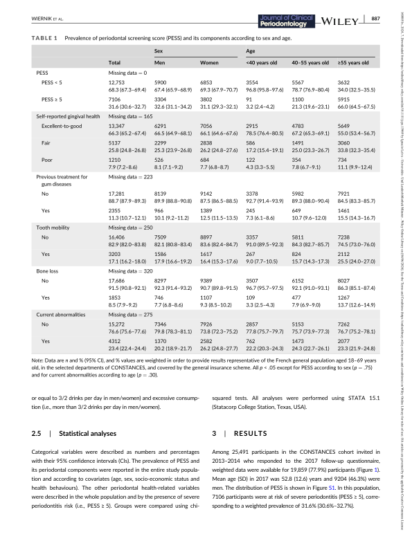
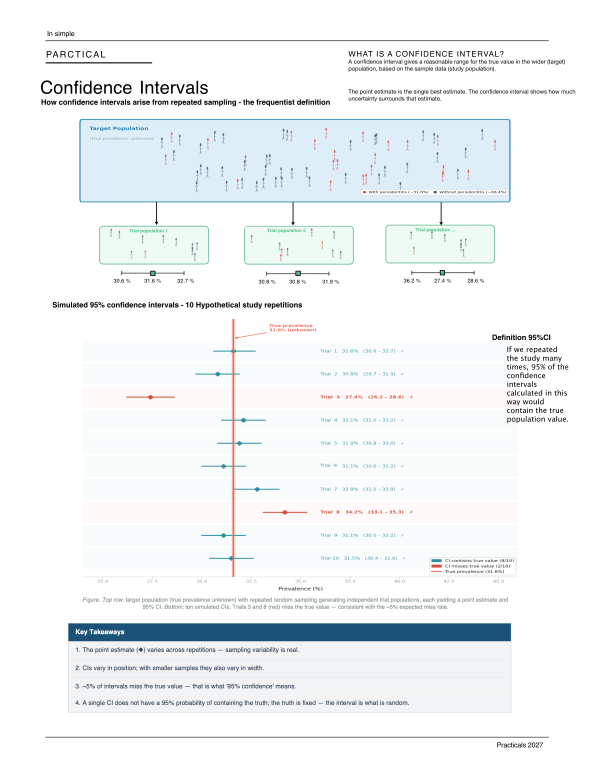
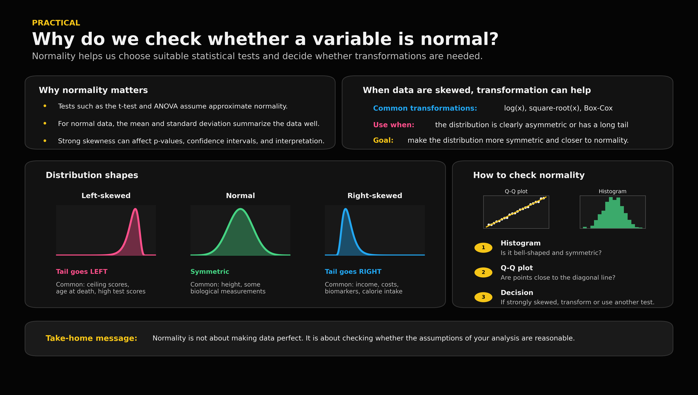

CONSTANCES is a large French population-based cohort used to follow adult volunteers over time and study health, lifestyle, social, and occupational factors.
Official CONSTANCES website
The PESS is calculated based on five items of the questionnaire, which are related to self-reported gingival health, previous treatment for gum diseases, tooth mobility, bone loss and current abnormalities, in addition to age and smoking status. PESS was considered as a binary variable and dichotomized as <5 or ≥5 (i.e., severe periodontitis risk).
“Missing data = 0” means that no participants had missing values for this PESS classification. In other words, everyone included in this part of Table 1 had enough information available to be counted.
This is the point estimate of the weighted prevalence among individuals with PESS ≥5. In the paper, PESS ≥5 indicates risk of severe periodontitis.
Weighted means the authors adjusted the sample so it better represents the wider French adult population. Plain example: if one type of participant was underrepresented in the study responses, their answers count a bit more; if another type was overrepresented, their answers count a bit less. Here, the authors used weights to correct for the original sampling design, non-participation in the cohort, and non-response to the 2017 follow-up questionnaire.
This is the confidence interval of the 31.6% point estimate. It gives the uncertainty range around the estimated prevalence.